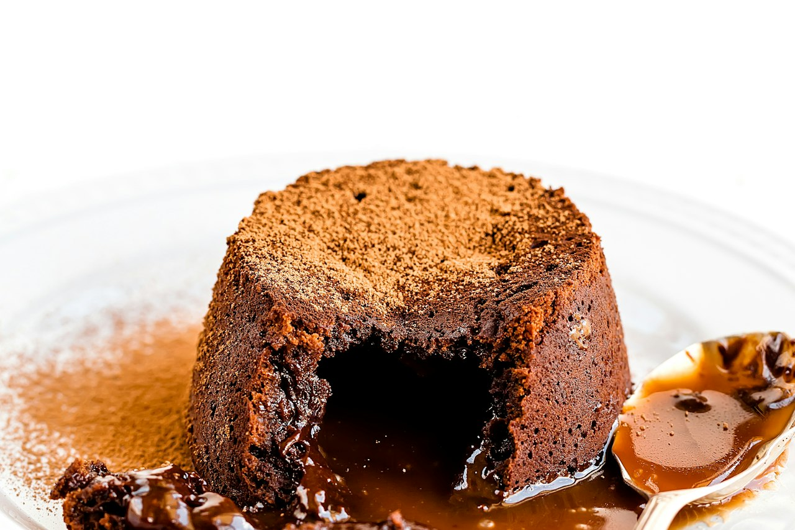

Air Fryer Molten Lava Cakes
Crisp-edged, gooey-centered lava cakes in 6-oz ramekins, done in about 10 minutes in the Ninja DoubleStack.
Dessert · Chocolate · Air Fryer · Ninja DoubleStack · Quick

Per serving
520kcal
7gprotein
Makes 4 servings. Whole batch: 2080 kcal, 28g protein.
Ingredients
Steps
- Butter 4 ramekins generously, dust with cocoa, tap out the excess.
- Bring 1–2 inches of water to a bare simmer in a saucepan. Set a heatproof bowl on top (bottom not touching water). Add chocolate and butter and stir occasionally until melted and glossy, 4–5 min. Keep the water at a gentle simmer and keep steam and drips out of the bowl. Stir in espresso powder if using. Remove bowl, wipe the bottom dry, cool 2–3 min.
- Whisk eggs, yolks, sugar, vanilla, and salt hard for about 1 minute until pale and slightly thickened.
- Fold the chocolate into the eggs, then sift in the flour and fold just until no streaks remain.
- Divide among ramekins, about ¾ full. Can be covered and refrigerated up to a day — add 1–2 min if cooking cold.
- Preheat the DoubleStack: Air Fry, 370°F, 3 min.
- Ramekins on one level, Air Fry 370°F for 9 min. Edges set and pulling away, center soft with a slight jiggle. Check one at 8 min the first time.
- Rest 1 min, run a thin knife around the edge, invert onto a plate, lift off. Serve immediately with powdered sugar, ice cream, or berries.
Cook's notes
Keep all ramekins on a single level — the top stack runs hotter. If four won't fit, do two batches of two. Optional filling: push a square of dark chocolate, a spoonful of peanut butter, or dulce de leche into the center of each before cooking.